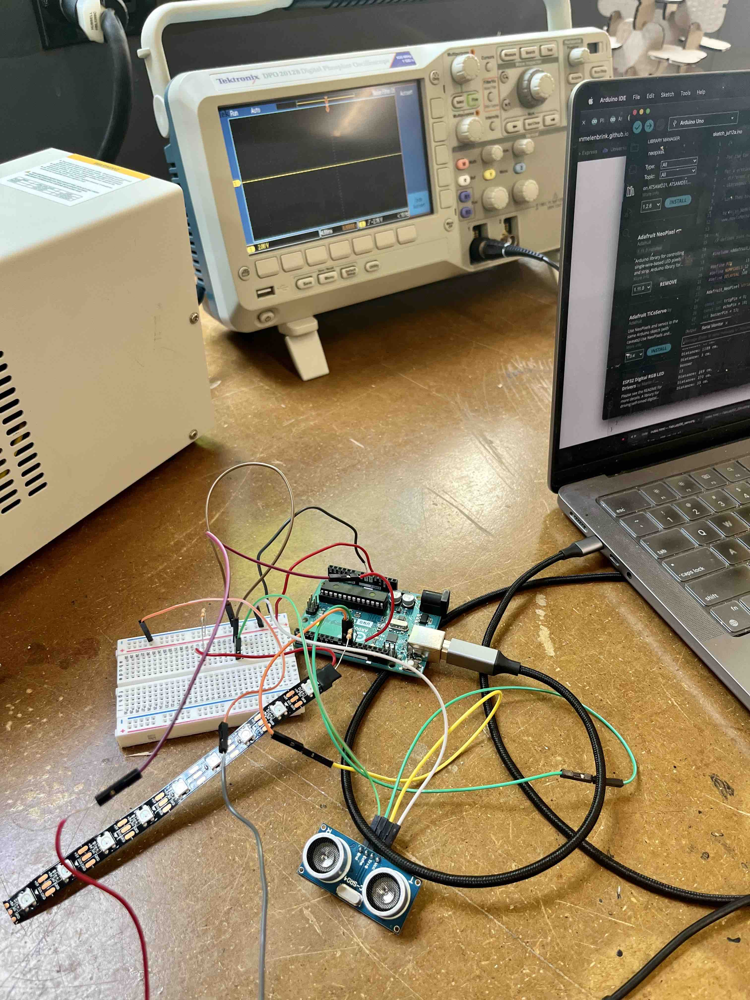
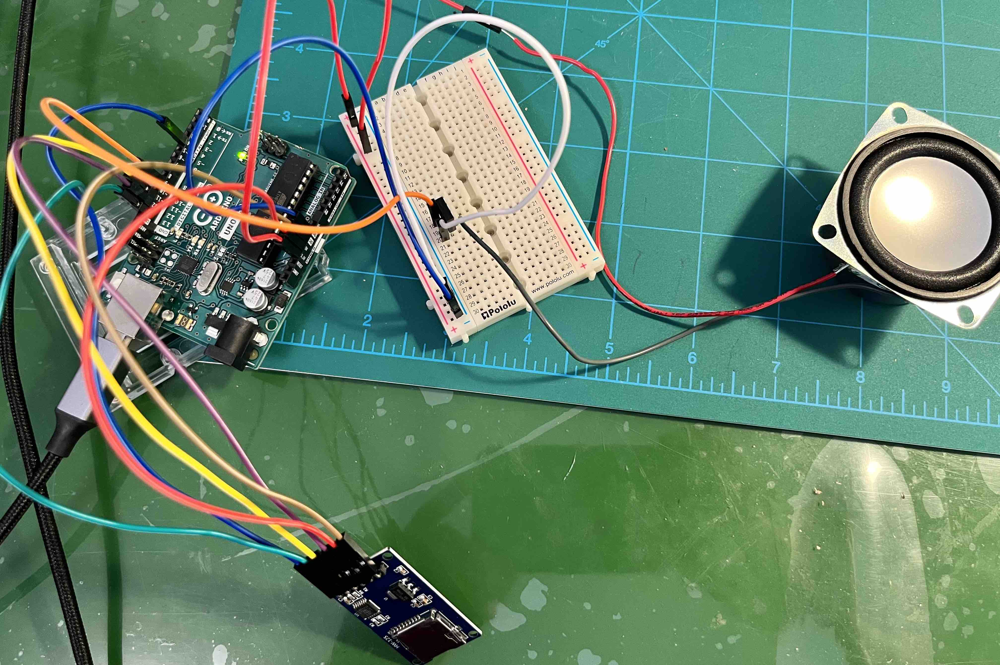
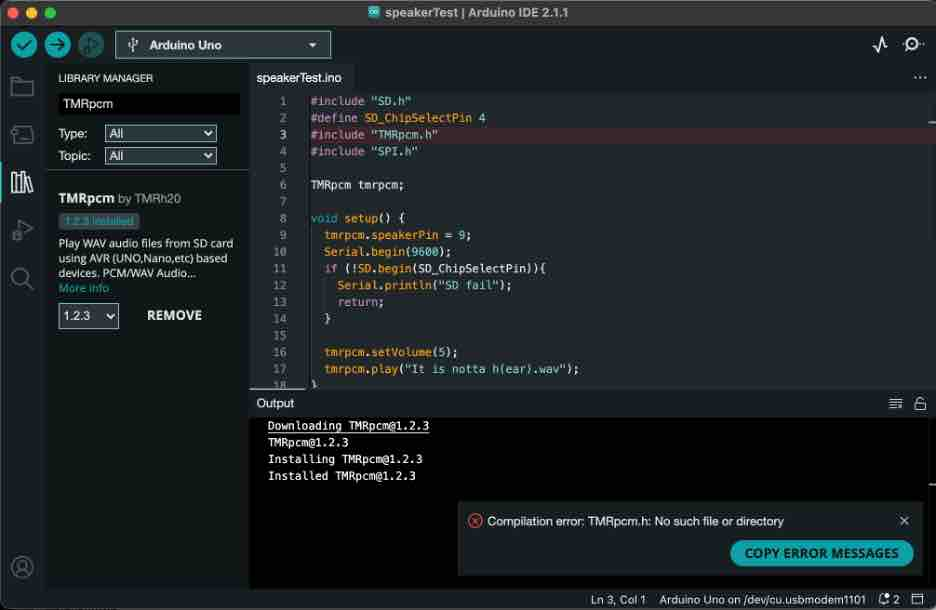
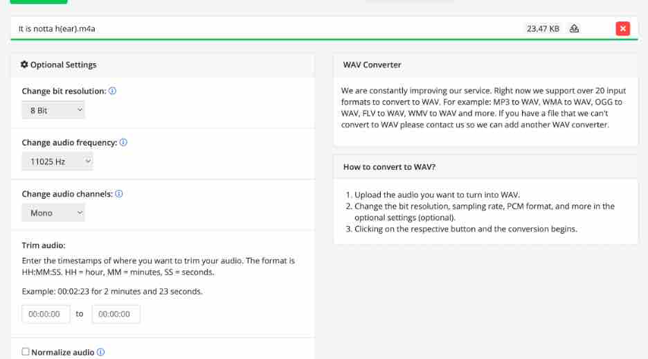
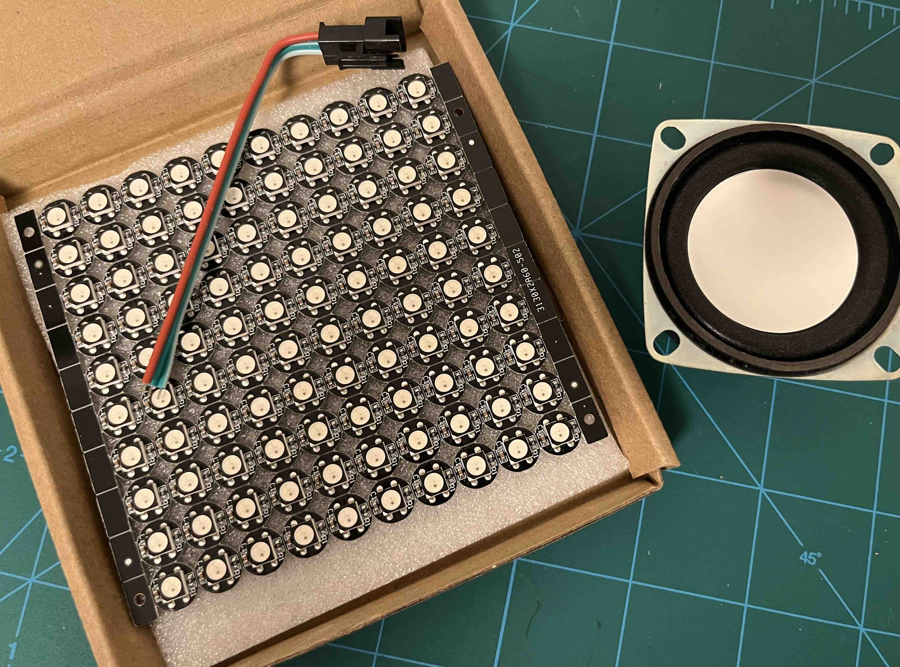
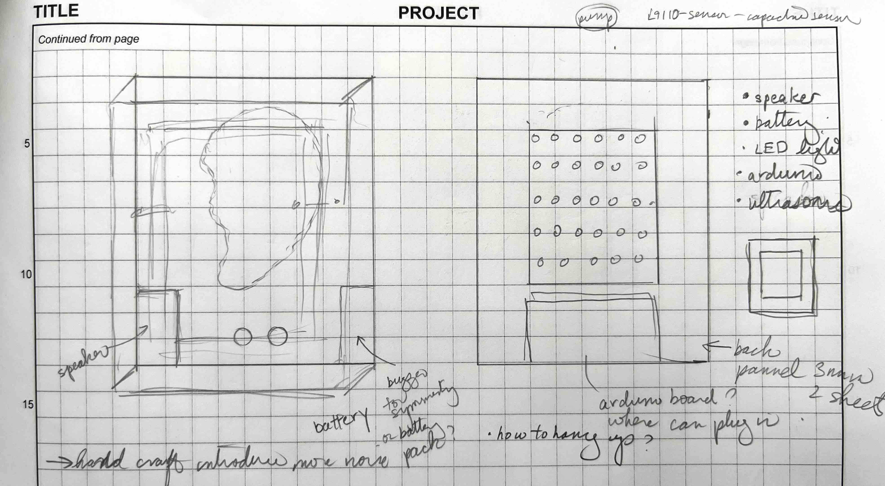
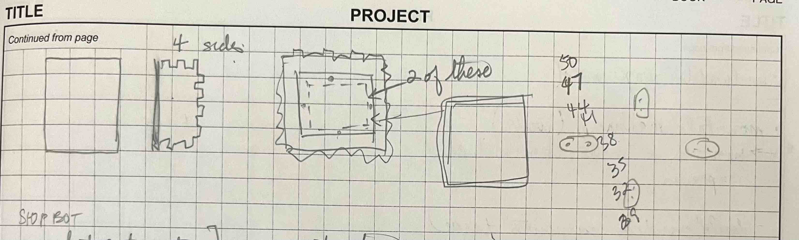
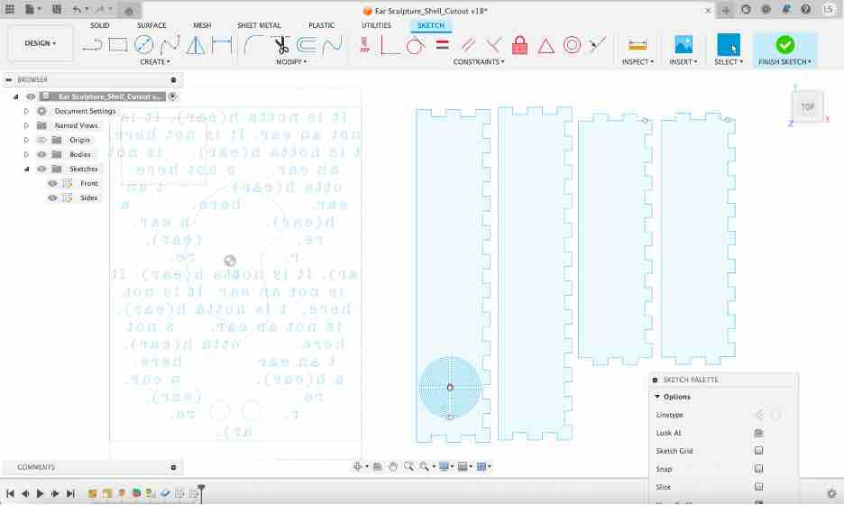
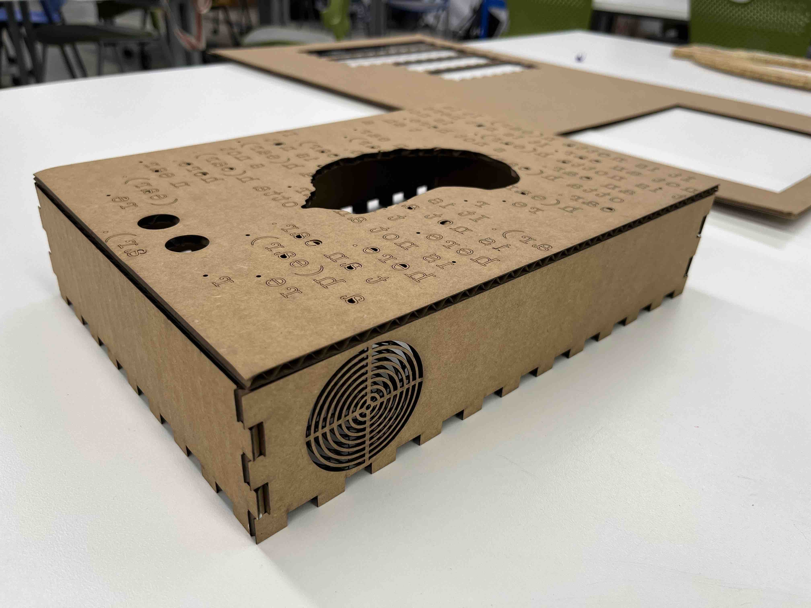
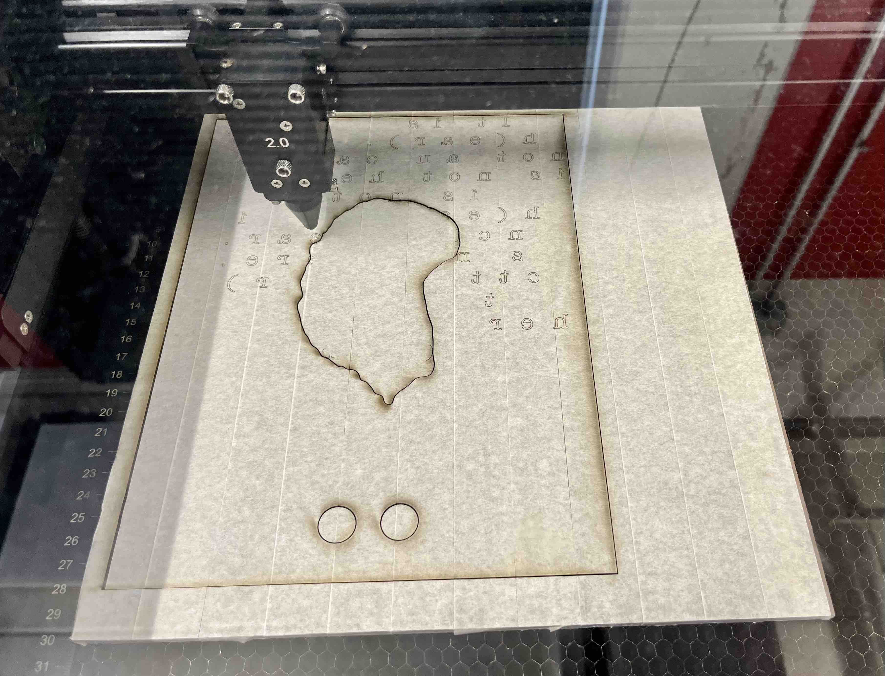

<br>
<h4>Ear Sculpture: Responding with visual and auditory actions</h4>
<br>
With the ultrasonic distance input sensor in place, I wanted to set up output responses from the ear sculpture with visual lighting and sound.
For the first part of this, since the speaker components (micro SD card adaptor, transister and speaker) were on order, I decided to start with the led lights and a buzzer proxy for the sound component. I decided to keep the proxmity sensor in place so that I could test out different distances and observe output changes. I wanted to get the mechanics working before I thought about the experience of the viewer as they approached the sculpture from different distances.
The output devices, led light strip and buzzer, were hooked up to the arduino board based on the instructions for the two devices. I then set up the if/else logic to trigger different actions based on distance measured by the input device. For this test, I set up small intervals so I didn't need to move out 4 feet everytime I wanted to test a particular action.
A few observations. With the led light strip I had, it was pretty easy to configure for red and green lights. However, the blue light was super faint. While I know that red require the least power, I was surprised at how weak the blue light was. Secondly, the buzzer is super annoying, even at varying tones to play a music track. I will be happy to get the speaker audio set up.
<iframe class="video" src="https://www.youtube.com/embed/BRFcyrs1mYM" title="YouTube video player" frameborder="0" allow="accelerometer; autoplay; clipboard-write; encrypted-media; gyroscope; picture-in-picture; web-share" allowfullscreen></iframe>
<figcaption>Buzzer output hooked up to an oscilloscope.</figcaption>
<iframe class="video" src="https://www.youtube.com/embed/TZ8FEMkzY6s" title="YouTube video player" frameborder="0" allow="accelerometer; autoplay; clipboard-write; encrypted-media; gyroscope; picture-in-picture; web-share" allowfullscreen></iframe>
<figcaption>Demo of the output actions based on different distances as recorded by the ultrasonic distance sensor.</figcaption>
Now that I had the output devices hooked up, I took some time to clean up my code and turn the different devices into classes. Here is the code.
<div class="box">
<pre>
<code>
/*
For the Ear Sculpture
A proximity sensor at the front of the ear sculpture. If there is a person within different distances to
the sculpture, it will respond through a set of auditory and visual responses.
Loni Stark
*/
#include <Adafruit_NeoPixel.h> //for LED lights
// defines pins numbers for the LED srip
#define PIN 11
#define NUMPIXELS 9
#define DELAYVAL 500 // Time (in milliseconds) to pause between pixels
const int trigPin = 10; //keep the proximity sensor the same.
const int echoPin = 6;
int buzzerPin = 7;
// defines variables
long duration;
int distance;
long waitTime = 1000;
unsigned long previousMillis = 0;
Adafruit_NeoPixel strip(NUMPIXELS, PIN, NEO_GRB + NEO_KHZ800); //declare an LED strip
class ProximitySensor
{
// Class Member Variables
// These are initialized at start up
int pTrigPin;
int pEchoPin;
public:
ProximitySensor(int tPin, int ePin)
{
pTrigPin = tPin;
pEchoPin = ePin;
// pinMode(pTrigPin, OUTPUT); // Sets the trigPin as an Output
// pinMode(pEchoPin, INPUT); // Sets the echoPin as an Input
}
void Update()
{ // Clears the trigPin
digitalWrite(pTrigPin, LOW);
delayMicroseconds(2);
// Sets the trigPin on HIGH state for 10 micro seconds
digitalWrite(pTrigPin, HIGH);
delayMicroseconds(10);
digitalWrite(pTrigPin, LOW);
// Reads the echoPin, returns the sound wave travel time in microseconds
duration = pulseIn(pEchoPin, HIGH);
}
};
ProximitySensor distanceSensor(trigPin, echoPin); //declare a proximity sensor
void setup() {
pinMode(buzzerPin, OUTPUT);
strip.begin(); // INITIALIZE NeoPixel strip object (REQUIRED)
strip.show(); // Turn OFF all pixels ASAP
strip.setBrightness(200); // Set BRIGHTNESS low to reduce draw (max = 255)
Serial.begin(9600); // Starts the serial communication
}
void loop() {
unsigned long currentMillis = millis();
distanceSensor.Update();
// Calculating the distance
distance = duration * 0.034 / 2;
// Prints the distance on the Serial Monitor
Serial.print("Distance: ");
Serial.print(distance);
Serial.println (" cm.");
strip.clear(); // Set all pixel colors to 'off'
if(currentMillis-previousMillis > waitTime){
if (distance < 10) {
// The first NeoPixel in a strand is #0, second is 1, all the way up
// to the count of pixels minus one.
Serial.println ("buzzer");
Serial.println (buzzerPin);
tone(buzzerPin, 1000, 500);
}
else if (distance < 20) {
for(int i=0; i<\NUMPIXELS; i++) { // For each pixel...
// strip.Color() takes RGB values, from 0,0,0 up to 255,255,255
// Here we are using a moderately bright green color:
strip.setPixelColor(i, strip.Color(150, 33, 33));
strip.show(); // Send the updated pixel colors to the hardware.
}
}
else {
for(int i=0; i<\NUMPIXELS; i++) { // For each pixel...
// strip.Color() takes RGB values, from 0,0,0 up to 255,255,255
// Here we are using a moderately bright green color:
strip.setPixelColor(i, strip.Color(0, 150, 0));
strip.show(); // Send the updated pixel colors to the hardware.
}
}
previousMillis = currentMillis;
}
delay(3000);
}
</code>
</pre>
</div>
My speaker components came in so I hooked up the components. I did realize I missed getting a micro SD card but thought I could set up the rest of the system. Since this is the first time I am trying to do this, I decided to get this speaker working on its own before incorporating it into my overall circuit.
As resources, I mainly used these two resources:
<ul>
<li>https://www.engineersgarage.com/arduino-audio-player/#:~:text=Arduino%20has%20PWM%20gpio's.,we%20can%20hear%20the%20audio </li>
<li>Video: https://www.youtube.com/watch?v=6DRayPCqK04</li>
<ul>
Per the videos, I have:
<ul>
<li>Arduino Uno Rev 3 board</li>
<li> Micro SD TF Card Adapter</li>
<li>BD 139 transister</li>
<li>4 Ohm 3W full range audio speaker stereo</li>
</ul>

<figcaption>Phase one set up with buzzer as proxy for audio speaker. Also need to rethink the LEDs as these will not generate the effect I want to light up the ear sculpture shell.</figcaption>

<figcaption>Hooked up all the different devices for the speaker set up. I am missing the micro SD card at the moment...</figcaption>
For the code, I also looked at the example. I installed the TMRpcm library (https://github.com/TMRh20/TMRpcm) which was accessible via the Arduino IDE library which made this much easier.

<figcaption>Install of the TMRpcm library in Arduino IDE.</figcaption>

<figcaption>Also needed to convert the audio file I recorded as a voice memo on my iPhone to 8 bit WAV file. Great resource provided by the video tutorial for this here: https://audio.online-convert.com/convert-to-wav. </figcaption>
Here is the code:
<div class="box">
<pre>
<code>
/* Speaker Test Code
Uses the TMRpcm.h library. Reads a wav file from a microSD card reader and outputs to a speaker.
*/
#include "SD.h"
#include "TMRpcm.h"
#include "SPI.h"
#define SD_ChipSelectPin 4
unsigned long previousMillis = 0;
long playTime = 3250;
TMRpcm audio;
void setup() {
audio.speakerPin = 9;
Serial.begin(9600);
if (!SD.begin(SD_ChipSelectPin)){
Serial.println("SD fail.");
return;
}
}
void loop() {
unsigned long currentMillis = millis();
if(currentMillis-previousMillis > playTime)
{
audio.setVolume(5);
audio.play("EarShout.wav");
Serial.println("Playing ear shout");
previousMillis = currentMillis;
}
}
</code>
</pre>
</div>
Finally, while there were circuit diagrams for hooking up the transister. I found this page to read more about the BD139 transister: https://www.youtube.com/watch?v=vn54E2CsT74
I got a micro SD card, transferred over my "Ear.wav" file and loaded the SD card into the reader to test. It was hard to tell which was the left and right pin of the transister so I had to play around with it until I go it working. I could hear the faint sound of the wave file coming from the speakers.
<iframe class="video" src="https://www.youtube.com/embed/L_BR0iT8bMo" title="YouTube video player" frameborder="0" allow="accelerometer; autoplay; clipboard-write; encrypted-media; gyroscope; picture-in-picture; web-share" allowfullscreen></iframe>
<figcaption>The sound is so faint that the iPhone's audio recording didn't even pick up the speakers.</figcaption>
Various options were tried to increase the volume including:
<ul>
<li>Adding an ampliflier instead of the transister. This did not make the sound louder.</li>
<li>Increasing the power to the amplifier with a 9V power source. This made the volume slightly louder but not by much.</li>
</ul>
I'm going to continue to look for ways to increase the volume, including checking the various components.
After swapping out some of the components, I finally decided to try recording a version of the statement with me shouting into my iPhone. This worked!
<iframe class="video" src="https://www.youtube.com/embed/ONcgT1hW0ZQ" title="YouTube video player" frameborder="0" allow="accelerometer; autoplay; clipboard-write; encrypted-media; gyroscope; picture-in-picture; web-share" allowfullscreen></iframe>
<figcaption>Can't believe I got this working. Super cool. Sometimes the solution is the simpliest paft of the puzzle. In this case, I needed to speak way louder into the original recording. I'll work on the sound design later. For now, it technical works! (btw: there is also a lot of rain tonight so some of the noise you are hearing in the video is from the rain outside.</figcaption>
Now that I have the speaker kind of working, I realize that with one input device and potentially three output devices, managing the I/O pins and ensuring adequate power whether plugged in or using a battery becomes a consideration. Therefore, I decided to write it down. If I need more pins, I believe I would need to move to a multiplexer.
Components and Power Requirements:
<ul>
<li>Gikfun Speakers: 3W, 4 ohm </li>
<li>Micro SD TF Card Adapter Reader: can interface level is 5V or 3.3V</li>
<li>Ultrasonic Distance 5V power, 0V Ground</li>
<li>BTF-Lighting WS2812B, individually addressable smart RGB LED Pixel: DC5V power supply (https://www.amazon.com/gp/product/B01DC0J3UM/)</li>
</ul>
<br>
In terms of Digital input/output pins:
<ul>
<li>13: SD Card SCK</li>
<li> 12: SD Card MISO</li>
<li>-11: SD Card MOSI</li>
<li>4: SC Card CS</li>
<li>-9 : Transister</li>
<li>-10: Ultrasonic Trig Pin</li>
<li>8: Ultasponic Echo Pin</li>
<li>7 : Buzzer Pin</li>
<li>-6: LED Pin</li>
</ul>
<br>
<h5>LED Array board</h5>
Just as I started to bask in the glow of getting the speaker hooked up, the LED lights came in. Hoping these are brighter and give me the desired effect in the ear sculpture.

<figcaption>LED panel I got for the ear sculpture...</figcaption>
<h5>Bringing It All Together</h5>

<figcaption>Started to think about how these different components will get packaged.</figcaption>

<figcaption>Quick sketch of how I was going to press fit the box. I didn't want the press fit to show from the front so decided this part would be glued on.</figcaption>

<figcaption>CAD for the box. I took the measurements of the width and height and divided each by an odd number that would get me to a measurement just greater than 10 mm. I wanted to have the press fit sides look symmetrical and also be fine notches. At the same time, when I researched this, I found that the recommendation is not to go below 10 mm as each tab presses on others structurally so one needs a certain amount of material to hold it stable. Okay, I went a little obsessive about the speaker grill. I will do a cardboard print of this first but it will not be exact as this design accounts for 6 mm plywood. I decided to go with 6 mm instead of 3 mm for structural stability after comparing the flex at both thicknesses.</figcaption>

<figcaption>Cardboard prototype of the housing for the ear sculpture.</figcaption>
<iframe class="video" src="https://www.youtube.com/embed/Yeyl-Y9VwGA" title="YouTube video player" frameborder="0" allow="accelerometer; autoplay; clipboard-write; encrypted-media; gyroscope; picture-in-picture; web-share" allowfullscreen></iframe>
<figcaption>3D scan of cardboard prototype. </figcaption>

<figcaption>Started the conversion to wood. I had seen someone else use the technique of taping the wood before scoring so that the burn marks do not change the color of the wood. Using this technique given the lettering in the front of the sculptures. Also, because of the additional grain of the walnut wood, I reduced the text by 50% to get what I thought was the right balance between letters and negative space. </figcaption>